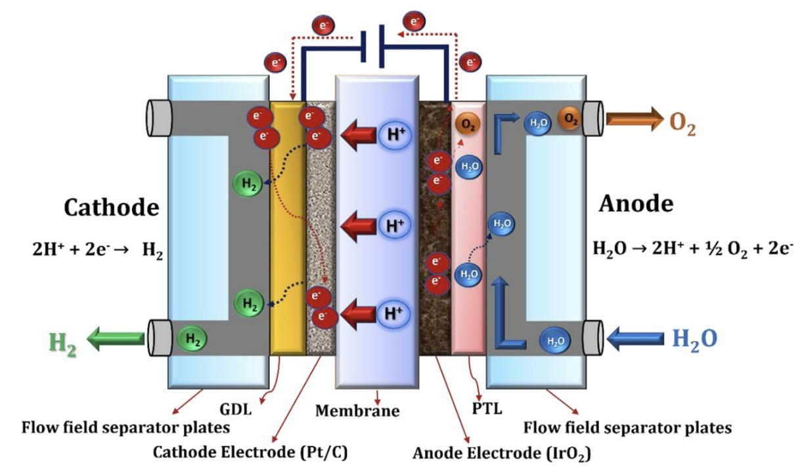
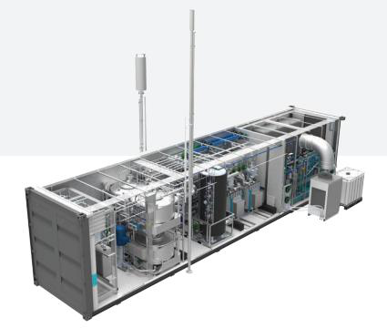

Course
MTE5884 — Engineering Project Evaluation
Institution
Monash University, Clayton
Outcome
Positive Feasibility — Hydrogen Recommended
Project Overview
KMC, a large-scale manufacturing company, operates a forklift fleet that relies heavily on internal combustion engine (ICE) vehicles — producing significant greenhouse gas emissions and creating air quality issues in enclosed logistics spaces. This project evaluated whether a transition to hydrogen fuel cell forklifts was technically sound, economically viable, and strategically aligned with KMC's sustainability objectives.
The assessment benchmarked three competing technologies — ICE, battery-electric (BEV), and hydrogen fuel cell — across emissions, operational performance, infrastructure requirements, and 10-year total cost of ownership. The recommended solution was the Toyota 2.5-ton hydrogen fuel cell forklift, supported by an on-site green hydrogen generation system powered by a 640 kW solar PV array and a 2 MWh battery energy storage system (BESS).
My Contributions
This was a four-person team. Beyond my formally assigned sections, I contributed inputs, edits, and quality review across the whole report — checking the technical accuracy of sections I hadn't drafted and raising the standard of the final submission collectively.
My formally assigned work covered the technically demanding and commercially consequential sections of the report:
- Hydrogen Economy (§3.4): Wrote the full section on hydrogen as an energy carrier — covering the color-coded production taxonomy (grey/blue/green), electrolysis pathways, high specific energy (120 MJ/kg), flammability characteristics, and Australia's emerging PEM electrolyzer ecosystem including Fortescue Future Industries and Hysata.
- Hydrogen Production Strategy (§4.2): Sized the on-site production system from first principles: 20,000 kg/year demand, 54.8 kg/day throughput, 52.5 kWh/kg PEM energy consumption, 640 kW solar PV requirement for Melbourne's 4.5 peak solar hours/day. Specified the Cummins HyLYZER 4000 as the selected electrolyzer on modularity, purity (>99.999%), and scalability grounds.
- Total Infrastructure CAPEX (§4.3): Built the full cost model for on-site green hydrogen generation — PEM electrolyzer (AUD $200k), 640 kW solar PV (AUD $768k), 2 MWh LFP BESS (AUD $1.4M), RO water purification (AUD $40k), installation and commissioning (AUD $241k), workforce training (AUD $15k). Total CAPEX: AUD $2.66M.
- Recommendation (§5): Drafted the final recommendation synthesising TCO findings, emissions impact, infrastructure viability, and government incentive alignment into a clear go/no-go conclusion.
- Formatting, content alignment, and editing: Reviewed and harmonised the full report's structure, language, and consistency before submission.
Technology Comparison — ICE vs BEV vs Hydrogen
The core analytical challenge was not simply whether hydrogen was better than ICE — it was whether it was the right choice for KMC's specific operational context: multi-shift operations, cold storage environments, high-throughput logistics, and a greenfield facility with no existing infrastructure commitments.
ICE (Diesel/LPG)
- 42.9 t CO₂/year per unit
- 75.2 kg NOₓ + 3.2 kg PM/year
- High fuel cost volatility
- Not suitable for indoor/cold storage
- Lowest upfront cost
Not viable — emissions & indoor restrictions
Battery-Electric (BEV)
- Zero on-site emissions
- 4–8 hr charge time per shift
- Performance degrades in cold storage
- Requires spare battery infrastructure
- Not suitable for multi-shift without swap
Partial fit — unsuitable for multi-shift/cold
Hydrogen Fuel Cell
- Zero on-site emissions (water only)
- ~3 min refuelling, full shift every time
- Consistent power — no charge degradation
- Cold-start capable (advances 2014–2024)
- Higher upfront cost, strong TCO case
Recommended — best fit for KMC's profile
 Toyota 2.5-ton hydrogen fuel cell forklift — the recommended unit for KMC's fleet
Toyota 2.5-ton hydrogen fuel cell forklift — the recommended unit for KMC's fleet
10-Year TCO Model — Fleet of 10
The total cost of ownership model covers a fleet of 10 Toyota 2.5-ton hydrogen fuel cell forklifts operating 2,000 hours per year. The model accounts for capital expenditure, green hydrogen fuel cost, annual maintenance, shared refuelling infrastructure, and residual value at the end of the 10-year period.
AUD $105,000 per Toyota 2.5-ton hydrogen fuel cell forklift
On-site hydrogen refuelling station, shared across the fleet
Green H₂ at AUD $12/kg — baseline fuel cost assumption across 10-year TCO model
Full 10-year projected TCO across capital, fuel, maintenance, and infrastructure
Green Hydrogen Production Strategy
Rather than relying on third-party hydrogen supply, the report proposed an on-site green hydrogen generation system as the more economically and strategically resilient option. The system was sized from first principles against KMC's fleet demand.
- Annual demand: 20,000 kg/year (54.8 kg/day at 2,000 hr/year operation across 10 forklifts)
- Electrolyzer: Cummins HyLYZER 4000 — PEM electrolysis at ~52.5 kWh/kg, >99.999% hydrogen purity. Selected for modularity, scalability, and compatibility with solar integration.
- Solar PV: 640 kW array — calculated from Melbourne's 4.5 peak solar hours/day and the daily energy requirement of 2,877 kWh for electrolysis.
- Battery storage: 2 MWh LFP BESS — buffers solar intermittency, maintains electrolyzer operation through low-insolation periods, enables grid independence.
- Water purification: Industrial reverse osmosis system (180,000 L/year demand at ~9 L water per kg H₂ produced).


Infrastructure CAPEX Breakdown
The total capital investment for the on-site green hydrogen generation system was modelled at AUD $2.66M — covering all major components from electrolyzer procurement through to workforce training and commissioning.
Government Incentives
Three Australian Government programs were identified as directly applicable to KMC's deployment scenario, collectively reducing the effective cost of adoption and de-risking the infrastructure investment:
- Hydrogen HeadStart Program: Demand-side support for large-scale renewable hydrogen projects, providing production credit to bridge the price gap between green and grey hydrogen.
- Clean Hydrogen Industrial Hubs Program: Targeted grants for developing hydrogen production and supply infrastructure in industrial precincts — directly applicable to KMC's greenfield facility context.
- R&D Tax Incentive: 43.5% refundable tax offset for eligible R&D expenditure on hydrogen integration — covers system commissioning, operational research, and performance monitoring activities.
Outcomes
Positive Feasibility Finding
Hydrogen fuel cell forklifts confirmed as technically and commercially viable for KMC's multi-shift, cold-storage, high-throughput logistics environment. Recommended over ICE and BEV alternatives.
10-Year TCO Quantified
AUD $4.27M total cost of ownership for a fleet of 10 over 10 years. Higher upfront capital offset by operational savings, zero fuel volatility, and zero carbon liability.
On-Site H₂ Production Sized
640 kW solar PV + Cummins HyLYZER 4000 + 2 MWh BESS system specified from first principles to produce 20,000 kg/year of green hydrogen at AUD $2.66M CAPEX.
Incentive Strategy Mapped
Three government programs identified (Hydrogen HeadStart, Industrial Hubs, R&D Tax Incentive) that materially improve the project's economics and reduce deployment risk.